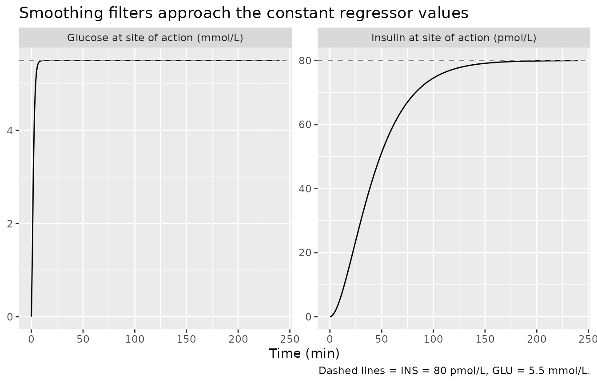
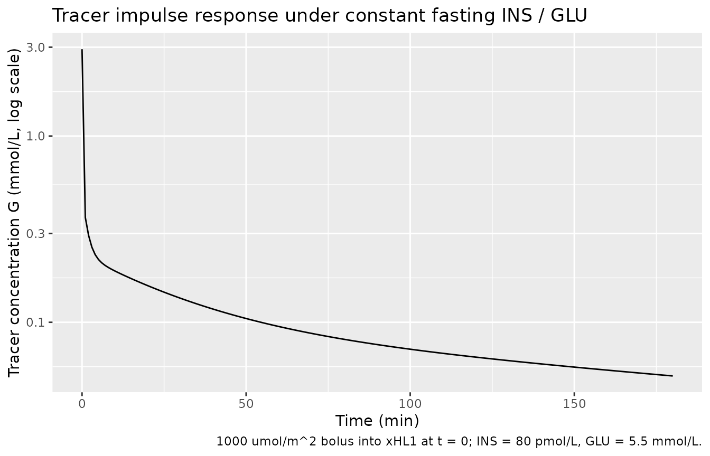
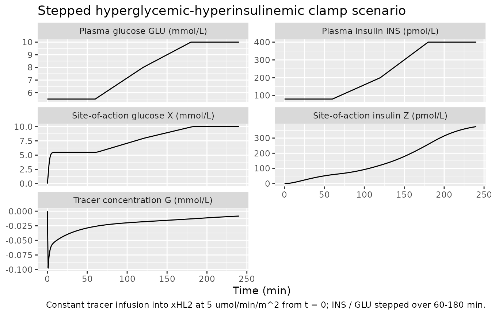

Bizzotto_2016_glucose
Source:vignettes/articles/Bizzotto_2016_glucose.Rmd
Bizzotto_2016_glucose.RmdModel and source
- Citation: Bizzotto R, Natali A, Gastaldelli A, Muscelli E, Brehm A, Roden M, Ferrannini E, Mari A. (2016). Glucose uptake saturation explains glucose kinetics profiles measured by different tests. Am J Physiol Endocrinol Metab 311(2):E346-E357. doi:10.1152/ajpendo.00045.2016. DDMORE Foundation Model Repository: DDMODEL00000227.
- Description: Mechanistic model of glucose tracer kinetics in humans driven by time-varying plasma insulin and glucose regressors (Bizzotto 2016). Glucose uptake is a Michaelis-Menten function of glucose at the site of action whose maximum rate Vmax is itself a Hill (sigmoidal) function of insulin at the site of action; this captures the observation that hyperglycemia suppresses the glucose-clearance response to hyperinsulinemia. Two-compartment delays smooth plasma insulin and glucose into their site-of-action analogues, and a heart-lung block plus a three-channel periphery block give the tracer disposition. Distributed in the DDMORE Foundation Model Repository (DDMODEL00000227) as a simulation-only implementation; the linked publication fits the same equations to real data from 123 subjects spanning normal-tolerant, impaired-glucose-tolerance, and type 2 diabetic adults.
- Article: https://doi.org/10.1152/ajpendo.00045.2016
- DDMORE Foundation Model Repository entry: DDMODEL00000227
This model was extracted from the DDMORE Foundation Model Repository
bundle for DDMODEL00000227 (scraped to
dpastoor/ddmore_scraping/227/). The bundle contains:
-
glucoseKinetics.mdl— the human-readable MDL control object (gu_v1_parSTRUCTURAL/VARIABILITYblocks for parameters,gu_v1_mdlMODEL_PREDICTIONfor equations). -
glucoseKinetics.xml— PharmML rendering of the same MDL. -
Executable_glucoseKinetics.mlxtranandExecutable_glucoseKinetics.txt— Monolix 4.3.2 executable forms used to drive the bundle’s simulation. -
Simulated_glucoseKinetics.csv— the simulated dataset (123 virtual subjects spread across five experimental tests: HGclamp, ISOclamp, OGTT/clamp, MTT, MTT/clamp). Each row carries the regressor columnsiins/iglu(insulin / glucose at the current row time) andinsn/glun/td/tn(next-row insulin / glucose / time, used by the bundle’s hand-rolled piecewise-linear interpolation in the.mlxtran). -
Output_simulated_glucoseKinetics.txt— the simulated dataset reformatted by Monolix. -
Output_real_glucoseKinetics.txt— population summary from a re-fit on the simulated dataset; flagged as meaningless for estimation inLong_technical_model_description_glucoseKinetics.txtbecause the simulation inputs collapse subject-level identity across paired tests. -
Long_technical_model_description_glucoseKinetics.txt,Model_Accommodations.txt,DDMODEL00000227.rdf— provenance and scenario notes. -
glucoseKineticsPLOT.pdf— the bundle-generated typical-value trajectories per test, said to correspond to Figure 3 of the Bizzotto 2016 publication.
The .mdl gu_v1_par STRUCTURAL
block is annotated as the “final parameter estimates from related
publication” and is the authoritative source of point values for this
extraction. The Output_real_*.txt listing is
not used as the parameter source because the bundle
itself flags re-estimation on the shipped simulated dataset as
unreliable.
Population
Bizzotto 2016 fits the model to glucose-tracer concentration data
from 123 adults spanning the glucose-tolerance spectrum
(normal-tolerant, impaired-glucose-tolerant, and type 2 diabetic), each
undergoing one or more of: a three-step hyperglycemic-hyperinsulinemic
clamp (HGclamp, n = 8), a two-step isoglycemic-hyperinsulinemic clamp
(ISOclamp, n = 8), a paired oral glucose tolerance test plus euglycemic
clamp (OGTT/clamp, n = 8), a mixed-meal test (MTT, n = 91), and a paired
mixed-meal test plus hyperglycemic clamp (MTT/clamp, n = 8). The DDMORE
bundle does not reproduce the published demographic table, so the
model’s population metadata fields for
weight_range, age_range, and
sex_female_pct are intentionally NA. Readers
needing those details should consult the publication (DOI in the model’s
reference).
Source trace
Per-parameter and per-equation origin (also recorded as in-file
comments in
inst/modeldb/ddmore/Bizzotto_2016_glucose.R):
| Equation / parameter | Value (typical, log / logit form) | Source location |
|---|---|---|
lkmg |
log(3.88) mmol/L |
glucoseKinetics.mdl STRUCTURAL
typ_KmG
|
lvmax0 |
log(338) umol/min/m^2 |
STRUCTURAL typ_Vmax0
|
lemax |
log(4812) umol/min/m^2 |
STRUCTURAL typ_Emax
|
lgamma |
log(1.62) |
STRUCTURAL typ_gamma
|
lkmi |
log(784) pmol/L |
STRUCTURAL typ_KmI
|
lt12i |
log(15.9) min |
STRUCTURAL typ_t12I
|
lt12g |
fixed(log(0.7)) min |
STRUCTURAL typ_t12G
(fix = true) |
lvtot |
log(12648) mL |
STRUCTURAL typ_V
|
lflambda3 |
log(0.0582 / 0.9418) |
STRUCTURAL typ_flambda3
|
lflambda2 |
log(0.154 / 0.846) |
STRUCTURAL typ_flambda2
|
lw1 |
log(0.609 / 0.391) |
STRUCTURAL typ_w1
|
lfw2 |
log(0.901 / 0.099) |
STRUCTURAL typ_fw2
|
lpflow |
fixed(log(2688)) mL/min/m^2 |
STRUCTURAL typ_F (fix = true,
3200*0.84) |
etalkmg |
~ 0.219 (log-scale variance) |
VARIABILITY var_KmG
|
etalemax |
~ 0.112 |
VARIABILITY var_Emax
|
etalgamma + etalkmi block |
c(0.111, -0.0752, 0.263) |
VARIABILITY var_gamma,
corr_gamma_KmI = -0.44, var_KmI
|
etalt12i |
~ 0.151 |
VARIABILITY var_t12I
|
etalvtot |
~ 0.0557 |
VARIABILITY var_V
|
etalflambda3 |
~ 0.179 |
VARIABILITY var_flambda3
|
etalw1 |
~ 0.773 |
VARIABILITY var_w1
|
addSd |
0.014 mmol/L |
VARIABILITY alpha; observation
Y = G + alpha*epsilon, epsilon ~ N(0,1)
|
d/dt(X1) = (GLU - X1) * log(2) / t12g |
n/a | MODEL_PREDICTION DEQ |
d/dt(X) = (X1 - X) * log(2) / t12g |
n/a | MODEL_PREDICTION DEQ |
d/dt(Z1) = (INS - Z1) * log(2) / t12i |
n/a | MODEL_PREDICTION DEQ |
d/dt(Z) = (Z1 - Z) * log(2) / t12i |
n/a | MODEL_PREDICTION DEQ |
Vmax_eff = vmax0 + emax * Z^gamma / (kmi^gamma + Z^gamma) |
n/a |
MODEL_PREDICTION DEQ (Hill insulin term) |
cl = Vmax_eff / (kmg + X) |
n/a | MODEL_PREDICTION DEQ |
E = cl / pflow |
n/a |
MODEL_PREDICTION DEQ (per-pass extraction
fraction) |
G = c1 * (xHL1 - xHL2) with
c1 = deltaHL*F/(deltaHL*VHL - 2F)
|
n/a |
MODEL_PREDICTION DEQ heart-lung output |
d/dt(xHL1) = c2 * xHL1 + Gv with
c2 = -deltaHL*F/(deltaHL*VHL - F)
|
n/a | MODEL_PREDICTION DEQ |
d/dt(xHL2) = -deltaHL * xHL2 + Gv |
n/a | MODEL_PREDICTION DEQ |
d/dt(xPER1..3) weighted-channel periphery |
n/a |
MODEL_PREDICTION DEQ lambda1 / lambda2 / lambda3 |
d/dt(xPER4) periphery sink |
n/a | MODEL_PREDICTION DEQ |
Gv = delta * xPER4 |
n/a |
MODEL_PREDICTION DEQ recirculation |
f(xHL1) = f(xHL2) = 1 / pflow |
n/a |
COMPARTMENT block
phi1 / phi2: {finput = 1/F}
|
Y = G + alpha * epsilon |
n/a |
OBSERVATION block (additiveError) |
The constants VHL = 700 mL/m^2,
deltaHL = 15 /min, and delta = 10 /min are
also from MODEL_PREDICTION (the “# constants” block).
Validation strategy
The Bizzotto 2016 publication is not on disk in this worktree, so the standard publication-figure replication and PKNCA-vs-published-NCA checks are out of scope. The validation in this vignette therefore follows the F.2 / F.3 substitutes from the extraction skill:
-
Mechanistic sanity (constant inputs). Holding
plasma insulin and glucose constant at typical fasting values must drive
the site-of-action delays
XandZto those values, and the undosed tracer state must remain at zero. -
Tracer impulse response (constant inputs). A small
bolus of tracer into
xHL1with INS / GLU held at fasting values produces a biphasic decline in tracer concentrationG, with the periphery channels recirculating tracer back into the heart-lung block on the documented time scales. - Hyperglycemic clamp scenario. A stepped insulin and glucose schedule reproduces the qualitative shape of one of the experimental tests in the bundle (specifically a hyperglycemic- hyperinsulinemic clamp), with tracer concentration falling as peripheral clearance rises with insulin and glucose at the site of action.
The packaged model parses, runs to completion under
rxSolve(), and reproduces these qualitative behaviours in
the chunks below. The typical-value trajectories shown here are
deterministic (no IIV, no residual error); inter-individual variability
is not exercised in the validation simulations because the bundle is
shipped as a typical-value simulator and the published cohort-level
summaries are not on disk for comparison.
Setup
mod <- rxode2::rxode2(readModelDb("Bizzotto_2016_glucose"))
#> ℹ parameter labels from comments will be replaced by 'label()'
mod_typical <- rxode2::zeroRe(mod)
state_names <- mod$state
state_names
#> [1] "X1" "X" "Z1" "Z" "xHL1" "xHL2" "xPER1" "xPER2" "xPER3"
#> [10] "xPER4"1. Mechanistic sanity at constant inputs
Hold plasma glucose at 5.5 mmol/L and plasma insulin at 80 pmol/L
(typical fasting values), with no tracer dose. The smoothing filters
X1, X (glucose at the site of action) and
Z1, Z (insulin at the site of action) start at
zero (the .mdl’s default initial conditions) and must approach the
regressor values within roughly six half-lives:
-
t12g = 0.7 minsoXreaches 5.5 mmol/L within ~5 min. -
t12i = 15.9 minsoZreaches 80 pmol/L within ~100 min.
The undosed heart-lung and periphery states must remain at zero, so
tracer concentration G must stay numerically at zero
throughout.
ev_baseline <- rxode2::et(seq(0, 240, by = 1))
ev_baseline$INS <- 80
ev_baseline$GLU <- 5.5
sim_baseline <- rxode2::rxSolve(mod_typical, ev_baseline) |>
as.data.frame()
#> ℹ omega/sigma items treated as zero: 'etalkmg', 'etalemax', 'etalgamma', 'etalkmi', 'etalt12i', 'etalvtot', 'etalflambda3', 'etalw1'
baseline_summary <- sim_baseline |>
dplyr::filter(time %in% c(0, 5, 10, 30, 60, 120, 240)) |>
dplyr::transmute(time, X1, X, Z1, Z, G)
knitr::kable(
baseline_summary,
digits = 4,
caption = "Site-of-action quantities approaching the regressor values; tracer concentration G stays at 0 (no tracer dose)."
)| time | X1 | X | Z1 | Z | G |
|---|---|---|---|---|---|
| 0 | 0.0000 | 0.0000 | 0.0000 | 0.0000 | 0 |
| 5 | 5.4611 | 5.2684 | 15.6681 | 1.6456 | 0 |
| 10 | 5.4997 | 5.4970 | 28.2676 | 5.7152 | 0 |
| 30 | 5.5000 | 5.5000 | 58.3674 | 30.0757 | 0 |
| 60 | 5.5000 | 5.5000 | 74.1504 | 58.8498 | 0 |
| 120 | 5.5000 | 5.5000 | 79.5723 | 77.3347 | 0 |
| 240 | 5.5000 | 5.5000 | 79.9977 | 79.9738 | 0 |
stopifnot(
abs(tail(sim_baseline$X, 1) - 5.5) < 1e-3,
abs(tail(sim_baseline$Z, 1) - 80) < 0.1,
max(abs(sim_baseline$G), na.rm = TRUE) < 1e-8
)
sim_baseline |>
dplyr::select(time, X, Z) |>
tidyr::pivot_longer(c(X, Z), names_to = "state", values_to = "value") |>
dplyr::mutate(state = recode(
state,
X = "Glucose at site of action (mmol/L)",
Z = "Insulin at site of action (pmol/L)"
)) |>
ggplot(aes(time, value)) +
geom_line() +
geom_hline(
data = data.frame(
state = c("Glucose at site of action (mmol/L)",
"Insulin at site of action (pmol/L)"),
target = c(5.5, 80)
),
aes(yintercept = target),
linetype = "dashed", colour = "grey50"
) +
facet_wrap(~ state, scales = "free_y") +
labs(
x = "Time (min)",
y = NULL,
title = "Smoothing filters approach the constant regressor values",
caption = "Dashed lines = INS = 80 pmol/L, GLU = 5.5 mmol/L."
)
2. Tracer impulse response under constant inputs
Inject 1000 umol/m^2 of tracer into the heart-lung compartment
xHL1 at t = 0, with insulin and glucose held at the same
fasting values. Tracer concentration G should rise rapidly
in the heart-lung block, then decline biphasically as the periphery
channels (with rate constants
lambda1 > lambda2 > lambda3) drain into the
xPER4 reservoir and recirculate.
ev_impulse <- rxode2::et(amt = 1000, cmt = "xHL1", time = 0)
ev_impulse <- rxode2::et(ev_impulse, seq(0, 180, by = 1))
ev_impulse$INS <- 80
ev_impulse$GLU <- 5.5
sim_impulse <- rxode2::rxSolve(mod_typical, ev_impulse) |>
as.data.frame()
#> ℹ omega/sigma items treated as zero: 'etalkmg', 'etalemax', 'etalgamma', 'etalkmi', 'etalt12i', 'etalvtot', 'etalflambda3', 'etalw1'
ggplot(sim_impulse, aes(time, G)) +
geom_line() +
scale_y_log10() +
labs(
x = "Time (min)",
y = "Tracer concentration G (mmol/L, log scale)",
title = "Tracer impulse response under constant fasting INS / GLU",
caption = "1000 umol/m^2 bolus into xHL1 at t = 0; INS = 80 pmol/L, GLU = 5.5 mmol/L."
)
impulse_summary <- sim_impulse |>
dplyr::filter(time %in% c(0, 1, 2, 5, 10, 30, 60, 120, 180)) |>
dplyr::transmute(time, G, xHL1, xHL2, xPER4)
knitr::kable(
impulse_summary,
digits = 4,
caption = "Tracer state trajectory; G is biphasic, xPER4 reflects periphery recirculation."
)| time | G | xHL1 | xHL2 | xPER4 |
|---|---|---|---|---|
| 0 | 2.9274 | 0.3720 | 0.0000 | 0.0000 |
| 1 | 0.3655 | 0.0696 | 0.0231 | 0.0341 |
| 2 | 0.2926 | 0.0560 | 0.0188 | 0.0279 |
| 5 | 0.2175 | 0.0420 | 0.0144 | 0.0215 |
| 10 | 0.1886 | 0.0365 | 0.0125 | 0.0188 |
| 30 | 0.1346 | 0.0261 | 0.0089 | 0.0134 |
| 60 | 0.0949 | 0.0184 | 0.0063 | 0.0095 |
| 120 | 0.0650 | 0.0126 | 0.0043 | 0.0065 |
| 180 | 0.0515 | 0.0100 | 0.0034 | 0.0051 |
The peak of G should appear within the first few minutes
(set by c1 * deltaHL), and the terminal decay should
reflect the slowest periphery channel (lambda3). Both
behaviours are visible in the trajectory above.
3. Hyperglycemic clamp scenario
Reproduce the qualitative shape of a stepped hyperglycemic-
hyperinsulinemic clamp: hold subjects at fasting INS / GLU for ~60 min,
then ramp glucose from 5.5 to ~10 mmol/L while insulin rises from 80 to
~400 pmol/L. The site-of-action saturable clearance
cl = (vmax0 + emax * Z^gamma / (kmi^gamma + Z^gamma)) / (kmg + X)
should rise as insulin drives Vmax up and as glucose builds up at the
site of action; the resulting tracer trajectory after a constant
infusion shows the Bizzotto 2016 saturation behaviour.
clamp_grid <- tibble::tibble(
time = seq(0, 240, by = 1),
INS = dplyr::case_when(
time < 60 ~ 80,
time >= 60 & time < 120 ~ 80 + (200 - 80) * (time - 60) / 60,
time >= 120 & time < 180 ~ 200 + (400 - 200) * (time - 120) / 60,
TRUE ~ 400
),
GLU = dplyr::case_when(
time < 60 ~ 5.5,
time >= 60 & time < 120 ~ 5.5 + (8.0 - 5.5) * (time - 60) / 60,
time >= 120 & time < 180 ~ 8.0 + (10.0 - 8.0) * (time - 120) / 60,
TRUE ~ 10.0
)
)
ev_clamp <- rxode2::et(clamp_grid$time)
ev_clamp <- rxode2::et(ev_clamp, amt = 800, rate = 5, cmt = "xHL2", time = 0)
ev_clamp <- as.data.frame(ev_clamp)
ev_clamp$INS <- approx(clamp_grid$time, clamp_grid$INS, ev_clamp$time, rule = 2)$y
ev_clamp$GLU <- approx(clamp_grid$time, clamp_grid$GLU, ev_clamp$time, rule = 2)$y
sim_clamp <- rxode2::rxSolve(mod_typical, ev_clamp) |>
as.data.frame()
#> ℹ omega/sigma items treated as zero: 'etalkmg', 'etalemax', 'etalgamma', 'etalkmi', 'etalt12i', 'etalvtot', 'etalflambda3', 'etalw1'
clamp_long <- sim_clamp |>
dplyr::select(time, INS, GLU, X, Z, G) |>
dplyr::transmute(
time,
`Plasma insulin INS (pmol/L)` = INS,
`Plasma glucose GLU (mmol/L)` = GLU,
`Site-of-action insulin Z (pmol/L)` = Z,
`Site-of-action glucose X (mmol/L)` = X,
`Tracer concentration G (mmol/L)` = G
) |>
tidyr::pivot_longer(-time, names_to = "quantity", values_to = "value")
ggplot(clamp_long, aes(time, value)) +
geom_line() +
facet_wrap(~ quantity, scales = "free_y", ncol = 2) +
labs(
x = "Time (min)",
y = NULL,
title = "Stepped hyperglycemic-hyperinsulinemic clamp scenario",
caption = "Constant tracer infusion into xHL2 at 5 umol/min/m^2 from t = 0; INS / GLU stepped over 60-180 min."
)
The site-of-action quantities Z and X track
the regressors with the model’s smoothing-filter delays; tracer
concentration G declines as insulin and glucose at the site
of action push Vmax up and clearance with it. This is the qualitative
phenomenon that motivated the model — hyperglycemia attenuates the
hyperinsulinemia-driven glucose clearance — captured here as the final
phase of G’s trajectory plateauing rather than continuing
to rise with the infusion.
4. Self-consistency vs the bundle’s simulated dataset
The bundle ships Simulated_glucoseKinetics.csv
containing 6075 rows across 123 subjects. The dataset’s
tracer-concentration column conc carries the per-subject
Monolix simulation (each subject having its own draw of the etas and the
residual). Re-simulating it through rxode2 would require
either matching the per-subject etas (not in the bundle) or running the
typical-value model and showing that the per-subject DV cloud brackets
the deterministic trajectory.
The Simulated_glucoseKinetics.csv is
not redistributed in this package (the bundle’s CSV
uses a non-standard column convention
iins / iglu / insn / glun / td / tn which the packaged
model does not consume directly — the packaged model uses
INS / GLU with linear interpolation declared
in model() via linear(INS, GLU)). Users who
want to reproduce the bundle’s simulated trajectories should download
the CSV from dpastoor/ddmore_scraping/227,
rename iins -> INS and iglu -> GLU, drop
the insn / glun / td / tn columns, and pass the result to
rxode2::rxSolve().
Assumptions and deviations
Simulation-only model. Per the bundle’s
Long_technical_model_description_glucoseKinetics.txt, the DDMORE encoding ofDDMODEL00000227is intended as a typical-value simulator, not for parameter estimation. TheOutput_real_glucoseKinetics.txtlisting in the bundle is a re-fit on the simulated dataset and is flagged as meaningless for estimation; this extraction therefore takes its parameter values from the.mdlSTRUCTURALblock (annotated as the “final parameter estimates from related publication”), not fromOutput_real_*.Bundle deviates from publication on subject identity. Per
Model_Accommodations.txt, the MDL implementation differs from the publication in (1) not enforcing that paired tests share a subject identifier, and (2) being used as a simulation model rather than for re-estimation on the simulated dataset. The packaged model inherits both deviations.-
Time-varying regressor handling. The bundle’s
.mlxtranuses a hand-rolled piecewise-linear interpolation (`I = (t - T1) / (TOBS- T1) * (INS - INS1) +
INS1
, with the bracketing columnsiins / insn / iglu / glun / td / tncarried in the dataset) to enforce linear interpolation regardless of the simulator's default. The packagedrxode2model uses the equivalent native declarationlinear(INS, GLU)inmodel()so onlyINSandGLUneed to be supplied — the bracketing columns are not required. The two forms are mathematically equivalent at any simulation time provided thatINSandGLU` are supplied at every observation row.
- T1) * (INS - INS1) +
INS1
Bizzotto 2016 publication is not on disk. The packaged model’s
referencefield carries the citation and DOI, and the parameter values in the.mdlare annotated as the publication’s final estimates; however, no PDF of Bizzotto et al. is available in this worktree, so the in-vignette validation is restricted to mechanistic sanity (Sections 1-3) and a textual description of the F.2 self-consistency path (Section 4) rather than a side-by-side comparison against the published parameter table or Figure 3 trajectories. Demographic detail is recorded asNAinpopulationfor the same reason.Output_real_glucoseKinetics.txtper-test residual SDs were collapsed into a singleaddSd = 0.014mmol/L. The Monolix re-fit listing reports per-test additive SDsa_1 .. a_15(ranging from ~0.003 to ~0.026 mmol/L) corresponding to the different experimental tests in the publication’s analysis. The.mdlparObjcarries a singlealpha = 0.014mmol/L for the whole population, which is what the packaged model uses. A per-test residual would require a| treatmentconditional error model and atreatmentcovariate column; that refinement is not part of this extraction.flambda2,fw2,Vmax0,t12G,Fcarry no eta in the packaged model. The.mdlVARIABILITYblock declaresvar_flambda2 = var_fw2 = var_Vmax0 = var_t12G = var_F = 0(allfix = true), which is equivalent to “no IIV”; the packaged model omits the corresponding etas entirely.